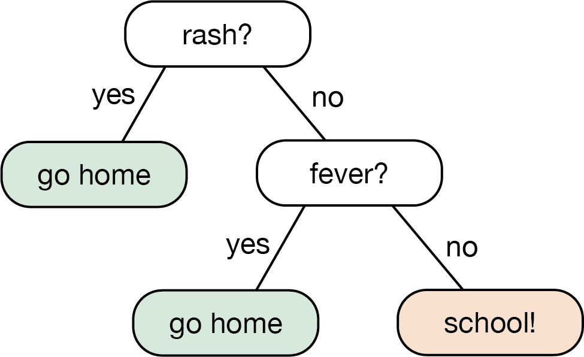
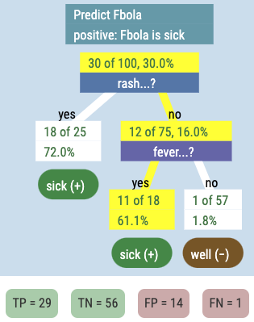
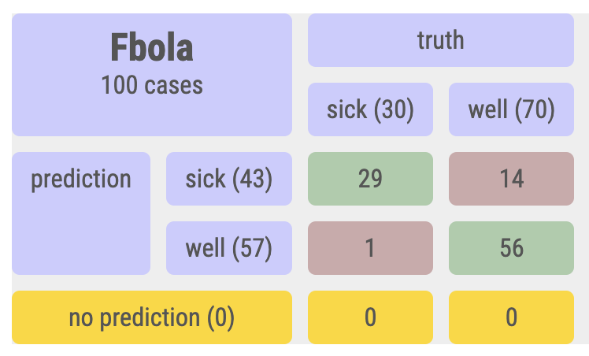

5 Fbola example
Finally we get to the data from the paper!
A medical context can be good for learning about trees because (a) this kind of thinking is actually used in medical contexts; and (b) the thinking and terminology of trees make sense here.
Our goal is going to be to make a diagnosis. Traditionally, “positive” means that you have the disease, and “negative” means that you do not.1
The tree represents a procedure for making a diagnosis. Every node represents a question or a test, and every branch an answer. When you get to the end of the tree, when you arrive at a terminal node, that node must have a diagnosis assigned to it, either positive or negative.
Let’s look at the school-disease example from the paper.
Suppose we’re at a school and there is an epidemic of the Fbola2 virus. The sympoms include a face rash and a fever. We want to evaluate students as they arrive and send them home if they are sick. Here is a tree we might use:

The tree makes what you’re supposed to do totally clear.
5.1 The same tree, with data
That tree was made from intuition. We can also make it with data, using Arbor. Suppose that we take 100 students and give them an expensive, time-consuming test for Fbola; those test results appear in the Fbola column. We also record whether they have a rash or a fever.
Use the live example below to make the tree. Don’t hesitate to make graphs to see relationships between the attributes.
You can even consider making a different tree to accomplish the same task—by asking about the fever first.
Don’t forget to include diagnoses at the ends of all your branches!
5.2 Trees as models
Notice this very very important fact: our diagnosis might be wrong. A positive diagnosis using the tree might be a true positive (TP), that is, it’s correct and you have the disease; or it might be a false positive (FP), that is, we send you home even though you are well.
Similarly, you can get false negatives (FN) and true negatives (TN).
You can see all four possibilities by looking at the table tab in Arbor. (Do that!) A typical tree, with its corresponding table, looks like this:


This leads us to an issue we have to emphasize: how do we know whether our diagnosis is right or wrong? The answer to that is, sometimes we don’t. In this case, though, we assume that the time-consuming and expensive test is perfectly accurate. In our practical situation at school, however, we hope our rash-and-fever tree does a good enough job.
In general, when we have a classification problem like this, there is some underlying Truth that we cannot see. We can only see the shadow3 of this Truth, in the form of data. We see the symptoms, not the actual disease. We use the data to make our best guess about the Truth.
In our case, we are trying to predict Fbola—the results of the expensive test—using symptoms: the data about rash and fever.
Taken together, this all means that a tree is a model. It’s an approximation of the truth that we will make as useful as possible. But it’s not the Truth; it’s a human construct.
Also, math nerds, notice that in this model, the tree’s procedure is a function. Its inputs are the data (fever and rash) and the inevitable output is either positive or negative. Notice how this is parallel to the situation when you use a line as an approximation to data in a scatter plot. The line is a function, and it’s not completely correct even though it can be useful.
In that situation, we can even try to find the best line using a criterion such as least squares. And that’s whats coming next with our lessons on trees.